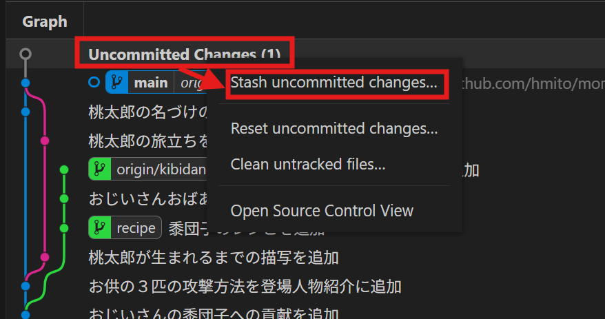
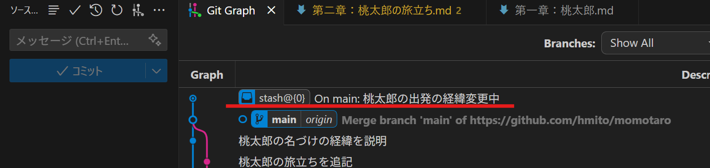
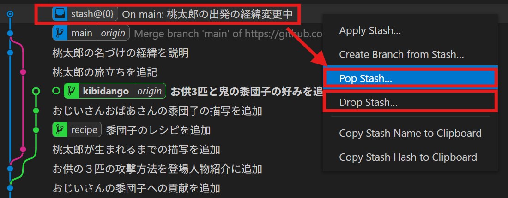
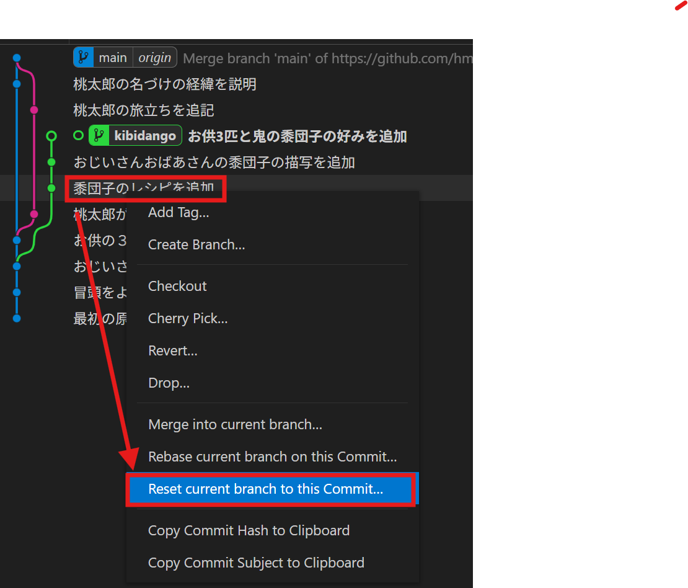
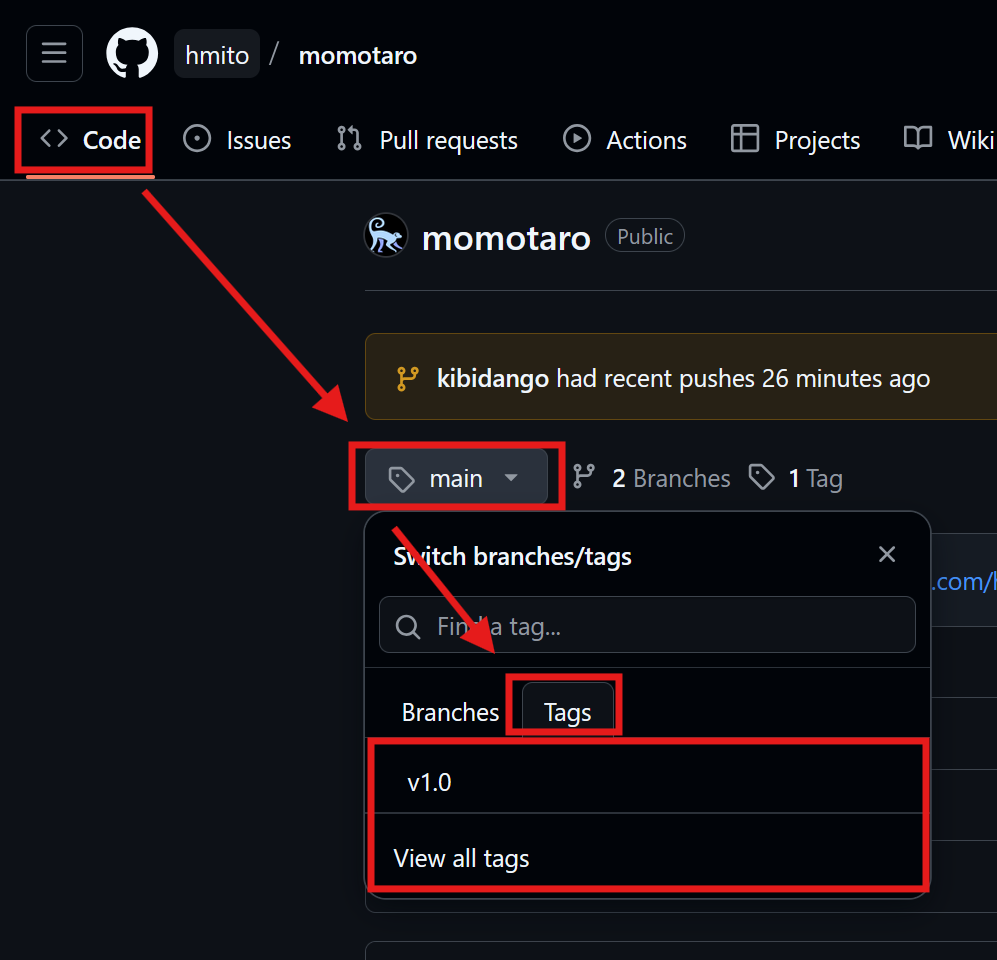
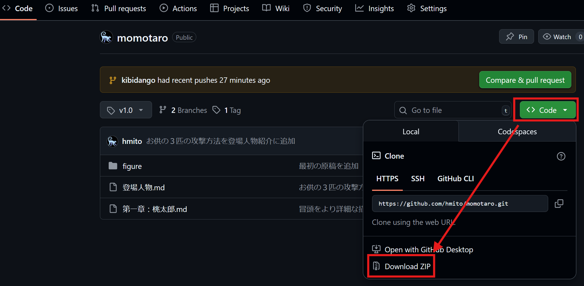
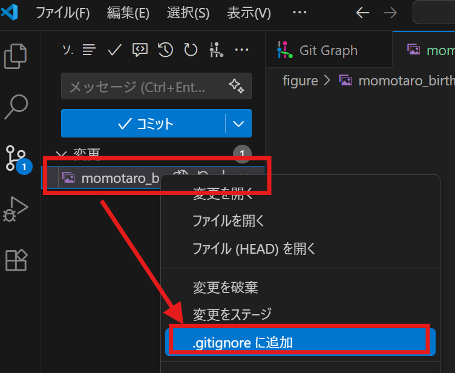
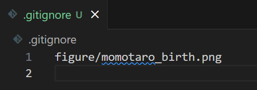

便利な機能
このページでは、ここまで取りこぼしてきたgitの便利な機能を見ていきます。
コミット前の変更の一時退避：スタッシュ stash
ブランチの切り替える際には、ファイルの変更ない（＝すべての変更がコミット済）である必要があります。しかし、以下のようにコミット前にブランチを切り替えたい場合もしばしば存在します。
- コミット前に、他のブランチにおけるファイルの状態の確認したい
- ファイルを変更し始めたが、ブランチの選択が間違っていることに気づいた
この場合、スタッシュ stashと呼ばれる操作で、一時的に変更内容を保存・退避する「一時的なコミット」のようなものを作ることができます。操作は以下の通りです。
- コミット前の変更があると、GitGraph上では「Uncommitted Changes」と表示されるので、その部分を右クリックし、「Stash uncommitted changes」を選択

- ポップアップが出るので、適当なコミットメッセージに類するメッセージを書き、「Yes, stash」を選択
- これで、stashと書かれたラベルが新たに作成され、ファイルは変更前の状態に戻る。ブランチの切り替えなどをしてもstashは消えない

- ブランチの切り替えなどの作業が済めば、stashラベルを右クリックし、「Pop stash」を選択することで、元の「ファイルを変更したがコミットしていない」状態に戻せる
- 元のブランチ以外を選択した状態でもpopできる。よって、あるブランチで行ったコミット前の変更を、別のブランチに移動することができる
- stashが不要であれば、「Drop stash」で削除できる

注意点として、stashはローカル専用です。リモートには反映されないので、他のPCへstashの内容を送ることはできません。
ブランチの巻き戻し：リセット reset
すでにコミット済みの変更を取り消す方法として、リバート revertがありました。リバートは取消自体もコミットとして残る安全な方法ですが、以下のような場合、コミットしたこと自体も取り消したいかもしれません。
- 複数のコミットに分散してしまったが、まとめてコミットしたい
- 色々と変更しつつ進めたが、誤りに気付いたのでそれらのコミットごとなかったことにしたい
- 間違ったブランチを進めてしまった
このようなコミットした履歴自体の改ざんする方法としてリセット resetがあります。リセットの操作方法は以下の通りです。なお、履歴自体をないことにしてしまう操作であり、非常に危険である点に注意してください。なお、リセットした結果その履歴上に他のブランチやタグがない場合、それらは履歴の表示からも消えてしまうため注意が必要です（詳細はブランチが消える？参照）。
- 履歴を改ざんしたいブランチにHEADを移動（ブランチラベルをダブルクリック）
- 戻りたい時点のコミットを右クリックし、「Reset current branch into this Commit」を選択

- ポップアップが出るので目的に応じて設定し、「Yes, reset」を選択
- フォルダの状態まで元に戻したくない場合は、「Mixed」を選択
- フォルダの状態も含めて戻したい場合は、「Hard」を選択
これで、ブランチラベルが当該コミットまで戻ります。「Mixed」を選んだ場合、ソース管理画面に、ファイルの変更内容がコミット前の状態で残されているはずです。
リモートの環境は完全に他者と共有しています。このため複数人での共同作業時に、以下のような操作をリモート環境に反映するのは大変危険ですので絶対にやめましょう。
- ブランチを改名した
- ブランチを削除し、別の場所に新たに同名のブランチを作成した
- ブランチをリセットして巻き戻した
これらの操作を行った場合、もし他の人がそれらのブランチをローカルに持っていた場合、履歴がつながらない形でリモートブランチが「ワープ」したことになります。このため、大量のコンフリクトが発生したり、最悪の場合進行中の作業が失われるなど、深刻な結果を招きかねません。
resetを利用した履歴の改変は、あくまでpush前、ローカル環境だけでの操作にとどめましょう。
危険を承知でどうしてもリモートブランチの中身を巻き戻したい場合、「履歴を改変せず、コミットの形で変更を打ち消す」ことが重要です。つまりブランチ自体の位置を戻そうとするのではなく、ブランチを進めつつ中身を戻す、という方法です。
このための方法の一つ目は、コミットと変更履歴のページで触れたリバートです。これは特定のコミットを打ち消す新たなコミットを作成するため、比較的安全な方法です。戻りたい時点まで順に遡りながらrevertすればフォルダの状態を戻すことができます。しかし、この方法はコミットが複数にまたがっている場合でも一つ一つに対して操作が必要となります。
そこで、もう一つの方法がリセットを活用した方法です。リバートより危険性は高いですが、任意のコミットの時点までフォルダの状態を戻すことができます。もっとも、リセットの操作自体リスクが高いので、十分注意して実行して下さい。
- 戻したいブランチがリモートブランチと同期されていることを確認する
- この条件が満たされていないと、resetと同時に変更履歴が消えてしまいます
- 戻りたいコミットまでhardでリセットをかける
- これで、ローカルブランチのラベルがこのコミットに移動するはずです
- この操作で、ファイル状態は戻りたいコミットの状態まで戻ります
- 再びリモートブランチのあるコミットまで、mixedでリセットをかける
- 再びローカルブランチのラベルがリモートブランチのラベルと一致した「同期状態」として表示されます
- ただし、mixedリセットなのでフォルダの状態は巻き戻らず、上記コミットの状態のままとなります
- コミットされていないファイルの変更（Uncommitted changes）が表示されているはずなので、全てステージしコミットする。コミットメッセージには、特定のコミットまでロールバックした旨を記載しておく。
これで、ブランチの状態は進めつつ、特定のコミットの時点までフォルダの状態を巻き戻すことができた（一つのコミットでこれまでの変更をすべて打ち消すことができた）はずです。必要に応じてプッシュでリモートのブランチに反映してください。
コミットにラベルを付ける：tag
作業環境ではなく特定の「バージョン」のようなものを管理する場合、ブランチのようにコミットに従って移動していくのではなく、特定のコミットに紐付けて残しておきたいでしょう。
このような、特定のコミットにつけるラベルをタグ tagといいます。作成は以下の通りです。
- タグをつけたいコミットで右クリックし、「Add tag」を選択
- ポップアップにタグの名前を入力し、「Add Tag」を選択
- タグラベルが履歴上に作成・表示される
- タグを削除する際は右クリックから「Delete tag」を、リモートにもプッシュしたい場合は「Push tag」を選ぶ
- タグ作成時のポップアップで「push remote」にチェックを入れておけば、作成と同時にリモートリポジトリにも自動でプッシュされる
なお、手順にもある通り、タグはそのままではローカルでしか見えないため、リモートにも反映するためにはpushの作業が必要です。
タグの便利な使い方を二つ紹介します。
一つ目は、特定のバージョンのファイルの配布です。多くのホスティングサービスでは、特定のタグが付いたバージョンのファイルを表示させることができます。Githubでは以下の通りです。
- GitHubにログインし、リポジトリを開く。
- 「Code」タブからブランチ名をクリックし、「タグ」のタブを開いて求めるバージョンをクリック

- これで特定のタグが付いたコミットのファイルが表示される。右上の「<> Code」ボタンからZipをダウロードすることもできる。
- 左クリックせず、右クリックすることでZipダウンロード用のURLも取得できる

二つ目は、研究の際の計算の管理です。シミュレーション等では、しばしばパラメータを変えながら大規模な計算を実施することがありますが、このような計算を「どのバージョンで行ったか」を記録しておくことは、あとで同じ結果を再現するためにも、バグが見つかった時に影響がないかを確認するためにも非常に重要です。
そこで、大規模な計算を実施するごとにその計算に名前を付けておき、同名のタグをgit上でつけておきます。計算結果を入れるフォルダ名にも同じ名前を付ければ、あとから計算結果を見た際に「この結果はどのバージョンで計算したものか」を簡単に紐付けることができます。
不要なファイルを無視する：ignore
gitは特定のフォルダの中身を丸ごとリポジトリとして管理します。しかし、以下のようなファイルは管理対象とするのは避けるべきものです。
- コンパイル時の一時ファイルやログファイルのように、そもそも不要なファイル
- VScodeの設定ファイルや、計算アプリRが出力するデータ「.RData」ファイルのように、そのPCで動作するには必要だが、他のPCには不必要なファイル
- 画像やバイナリファイルのように、Gitが同期するのが苦手な文字形式でない大量のファイル
- .DS_StoreやThumbs.dbなど、OSが作成する隠しファイル
これらのファイルを、gitで管理してしまうと不要なファイルが同期されてしまいます。
そこで、指定のファイルを同期から除外する機能、ignoreがあります。ignoreの設定方法は以下の通りです。
- 「ソース管理」画面の変更欄で、無視したいファイルを右クリックし、「.gitignoreに追加」を選択

- 「.gitignore」という名称のファイルが変更されるので、通常の変更同様、ステージしてコミット
.gitignoreの中身を見てみると、先ほどの無視したファイルのパスが書かれたただのテキストファイルであることがわかります。

実は、無視するファイル類はこのファイルを直接テキストで編集するだけでも、登録することができます。以下のような特殊な表記を使うことで、より柔軟な指定が可能です。
# 「#」で始まる行は無視される
# 「/」で終わると、そのフォルダ内、という意味になる
# 「png」フォルダの中身を無視する
png/
# 「*」はワイルドカードと呼ばれる「なんでも当てはまる部分」になる
# 拡張子が「.dat」で終わるファイルをすべて無視する
*.dat研究では、大規模計算の結果をしばしば出力しますが、これらのデータはたいていgitが保存することが苦手なデータです。
そこで、計算結果は丸ごとどこかのフォルダ（例えば「analysis」や「data」など）に出力し、そのフォルダの中身は丸ごと.gitignoreに登録してしまうと、便利です。これらのフォルダの中に、サブフォルダとして上で触れた「タグにする計算名」にしておけば、より管理が簡単かもしれません。
なお、.gitignoreに登録したデータは当然バックアップされないので、他の手段（オンラインストレージなど）でバックアップ・同期を取るようにしておくと良いでしょう。